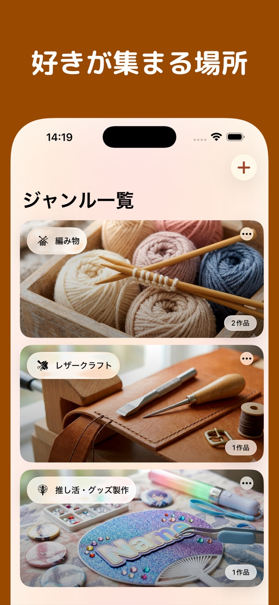
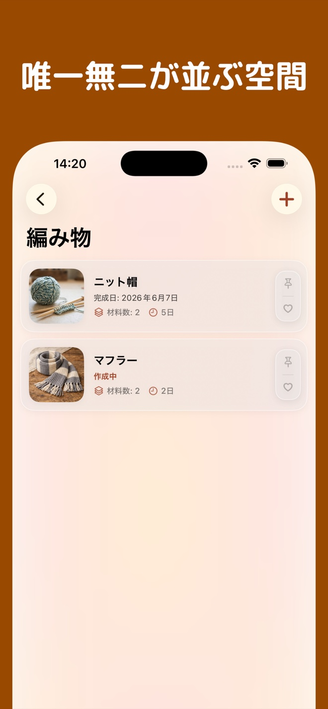
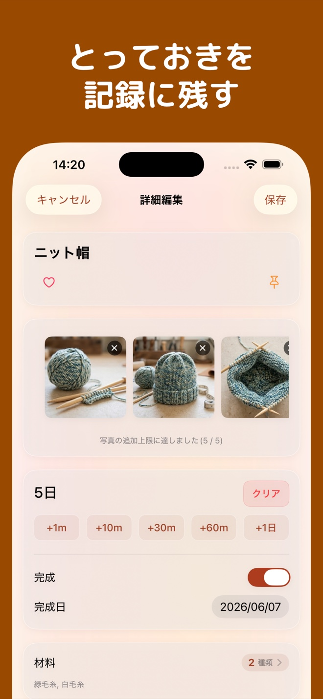

自分だけの作品ギャラリーYour own gallery of creations
作品の写真を並べて、自分だけの作品集を作れます。飾り、編み物、木工、お人形など、さまざまなものづくりに。Build a personal gallery of your work, from jewelry and knitting to woodworking and dolls.
Handworks
作品・素材の記録Creative portfolio
作品の写真も、使った素材も。ものづくりの思い出と工夫を、ひとつにまとめて残せます。Keep photos of your creations, the materials you used, and the ideas behind each piece together.

作品の写真を並べて、自分だけの作品集を作れます。飾り、編み物、木工、お人形など、さまざまなものづくりに。Build a personal gallery of your work, from jewelry and knitting to woodworking and dolls.
素材の会社名、型番、大きさなど、作品に使った材料の情報を記録できます。Record material makers, model numbers, sizes, and other details behind your creations.
素材を買ったお店やウェブサイトの情報を保存。同じ素材を探したいときの手がかりになります。Save the shops and websites where you found your materials, ready for your next project.

